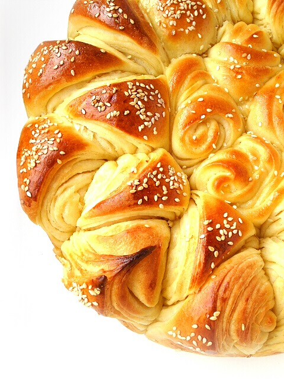

Коледна погача
Продукти:
- прясно мляко – 500 мл
- яйца – 4 бр.
- мая – 40 г
- олио – 100 г
- брашно – 1.1/2 кг
- сол и захар – по 1 с. л.
- маково и сусамово семе
Начин на приготвяне:
Отделят се два от жълтъците на яйцата. Брашното се пресява 3 пъти и от изброените продукти се омесва тесто. Така приготвеното тесто се удря 100 пъти върху плота на масата. Получава се меко и пластично тесто. Следва оформлението на погачата, която се оставя да втаса, намазва се с отделените жълтъци и се пече на 200 градуса – 40мин. От същото тесто отделям малко количество и приготвям гевречета за коледарчетата.